map&&unordered_map
map&&unordered_mSTLap
恰巧看到大V老师使用unordered_map来实现了资源池，那么便想在分析池的概念前，先弄清这个STL的提供的结构
将分析pair，map，unordered_map
我们将解决课程的以下疑问
- unordered_map的实现方法和map的区别（主要是解释map）？
- 为什么大v老师的使用下标【】的方法就可以构建新的对象？
- 大v老师的键值使用了枚举，那么对于unordered_map键值类型限制和map的键值类型限制具体有哪些，枚举为什么可以作为其键值（最后的比较会解释）？
pair和map
pair
pair是c++定义好的一个类模板的结构体，使用需要加上头文件
pair意如其名，就是一对，用于一对数据的集合，这个数据结构就十分有利于后面的键值和关键字值的集合，进一步实现各类查找表，map的基本单元就是pair构成的。
pair的部分源码
1 | template <class T1, class T2> |
最常用的就是pair的俩个可访问的first和second
【声明方式】
1 | std::pair<第一种数据类型，第二种数据类型> 变量名; |
【简单的使用】
1 |
|
初始化
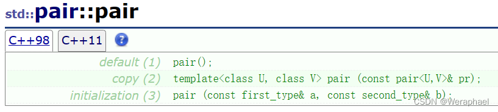第一种就是默认构造函数，数字类型数据初始化为0，字符串初始化为空，
如果是类的话从上面提供的部分源码看，进一步调用类的构造函数
1 | pair<int,int >test; |
- 第二种就是拷贝构造函数，必须是同类型的就是了
1 | pair<int,int >test（pair_copy）; |
- 第三种就是构造函数传入对应的俩个值了,就是构造函数重载
1 | pair<int,int>test(1,1); |
还能比较大小
就是实现了运算符重载
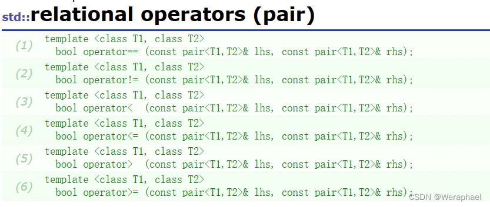 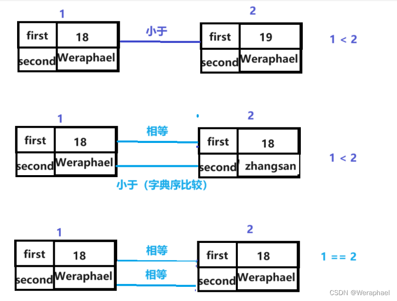先比first，first相等再比second（前提是对应的数据类型必须相同）
字符串的比较大小的规则在string可以去了解，至于类可能就是取决于类的运算符重载了
1 | pair_1>pair_2; |
make_pair()
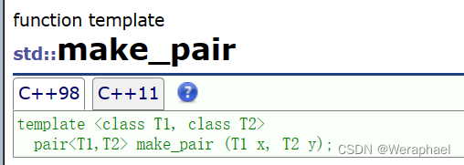这就是标准库的提供的一个函数，用于创建一个临时的pair
功能：**make_pair函数接收两个参数，然后它会将这两个参数来创建pair对象**
1 | map.insert(make_pair<int,int>tmp(1,2));//这样就可以在图直接插入一个临时创建的pair了 |
map
首先在STL的容器类型上，map属于“关联式容器”
所谓关联式容器，就是每个元素都有一个键值（
key）和一个实值（value）。当元素被插入到关联式容器中时，容器内部结构可能是红黑树，也可能是哈希表，然后按照其键值key大小，以某种特点规则将这个元素放在一个合适的位置。一般而言，关联式容器的内部结构是一个平衡二叉树，以便获得良好的搜索效率，也就没有一般序列式的容器的头尾元素
map就是以pair为基本单元，结构上采取红黑树形成的一个动态查找表。
此时pair的俩个元素就有区别了pair<键值，实值>
注意：map不允许重复的键值出现
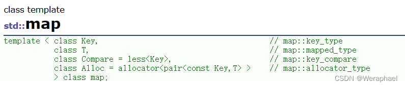#/## 插入
V老师的没有使用插入函数，而是使用索引去实现插入的功能，
虽然使用的是unordered_map（基于哈希表实现），但是和map大概原理也大差不差
后面也会分析如何实现【】访问操作
【函数原型】
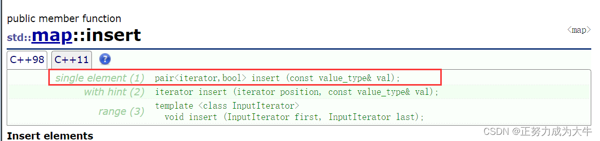 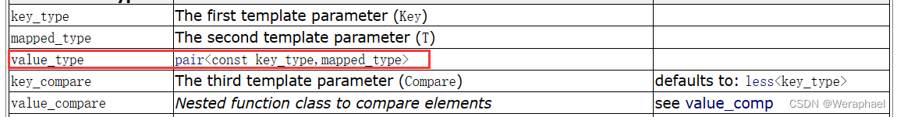从第一个插入函数参数我们可以直到调用map的insert参数是一个pair类型，其次注意其返回值是一个pair<迭代器，bool（是否插入成功）>
所以要注意的就是参数和返回值。
1 |
|
常用的插入方式如下
1 | //方式1 |
迭代器
map支持迭代器，表明我们可以利用迭代器遍历甚至是for
1 |
|
那么现在就有一个问题：可以通过map的迭代器改变map的元素内容吗？
- 如果是想修改键值(
key)是不行的。还是和set一样的原因：map元素的键值关系到map元素的排列规则。任意改变map元素的key将会严重破坏map组织。 - 但如果想要修改元素的实值(
value)，那么是可以的。因为map元素的实值value并不影响map的排列规则
这里显示键值是const，不可修改
operator【】
对于上面的实值遍历我也可以这么写
1 |
|
不难看出对于map类函数，键值可以直接当做索引直接访问
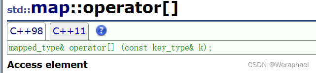 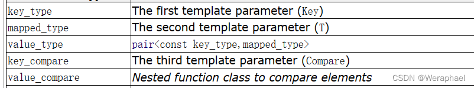mapped_type就是对应的实值，key_type就是对应的键值
【】的重载以键值为参数，返回对实值的引用
但是V老师明明是在创建新的对象，为什么可以直接赋值创建新对象呢呢？
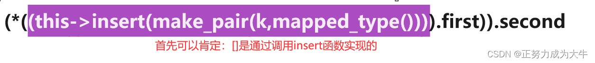上面的图像说明了原理，我们之前也分析了insert函数的返回值是$pair<iterator,bool>$
先调用map当前的insert函数（this->insert()）
如果有重复的键值就会插入失败，返回pair<对应位置的迭代器，false>,返回pair的first（要查找的pair）的second（实值）。
如果没有重复的键值显然插入成功了，返回pair<新插入的点的迭代器，true>，返回pair的first（新创建的pair）的second。
那么访问的也不过俩种情况
- 键值
key已经在树里，那么就返回树里面key所在结点的迭代器- 键值
key不在树里，那么就返回新插入key所在结点的迭代器（注意没有键值就新插入一个了）注意观察函数的返回值是引用，表明我们可以修改对应的实值value。
从而大v老师的创建也就合理，因为对应的键值没有，所以在访问的时候已经创建了。
虽然大v老师使用的是无序图(哈希表实现)的，但实现类似不妨碍我们去理解。
（对于枚举作键值起始也很好理解，枚举ResID是一种类型，就像int，里面的实际的对象就是键值，就像1，2
但是对于哈希表的键值，这里枚举能使用的原因也比较特殊）
1 | texture_pool[ResID::Tex_Player] = IMG_LoadTexture(renderer, "resources/player.png"); |
常见的其他map函数方法
取值
Map中元素取值主要有at和[ ]两种操作，at会作下标检查，而[]不会。
[]实现原理我们也解释了,不难理解为什么不会
1 | ID_Name.at(2016)； |
容量查询
1 | // 查询map是否为空 |
删除
1 | // 删除迭代器指向位置的键值对，并返回一个指向下一元素的迭代器 |
交换
1 | // 就是两个map的内容互换 |
顺序比较
1 | // 比较两个关键字在map中位置的先后 |
查找
1 | // 关键字查询，找到则返回指向该关键字的迭代器，否则返回指向end的迭代器 |
unordered_map和map简单比较（使用方法类似，只说说不同）
首先最大的区别就是底层的实现逻辑不同
map：
优点：
- 有序性，这是map结构最大的优点，其元素的有序性在很多应用中都会简化很多的操作
- 红黑树，内部实现一个红黑书使得map的很多操作在lgn的时间复杂度下就可以实现，因此效率非常的高
缺点：
- 空间占用率高，因为map内部实现了红黑树，虽然提高了运行效率，但是因为每一个节点都需要额外保存父节点、孩子节点和红/黑性质，使得每一个节点都占用大量的空间
适用处：对于那些有顺序要求的问题，用map会更高效一些
unordered_map：
优点：
- 因为内部实现了哈希表，因此其查找速度非常的快
缺点：
- 哈希表的建立比较耗费时间
适用处：对于查找问题，unordered_map会更加高效一些，因此遇到查找问题，常会考虑一下用unordered_map
有一点我比较在意就是关于键值的问题
对于红黑树的有序排序必然少不了比较，而哈希表的键值映射到索引的过程如何转换
对于map来说
对于提供键值的类型虽然没有限制，但是对于一些自定义的类，必须有比较运算符的重载（>,<,==,）
不然无法在红黑树实现有序的排序，下面的方式就会报错
1 |
|
对于unordered_map来说
键值只能是int或者string类型，因为哈希表是一个映射的过程
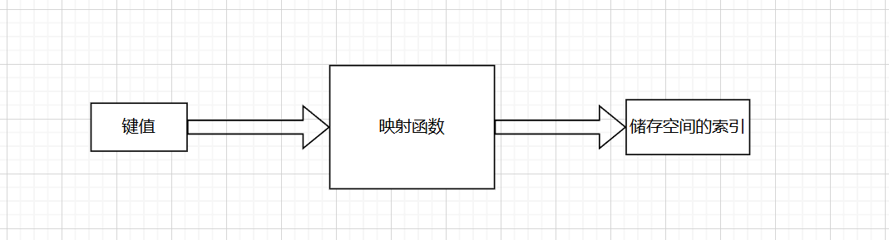所以显然类无法通过函数实现映射，只能使用其哈希内部定义的整型和字符串
对于大v老师的使用来说，恰巧枚举是可以视为整型数据的，所以可以作为unordered_map的键值，这一点也是十分巧妙。
map&&unordered_map